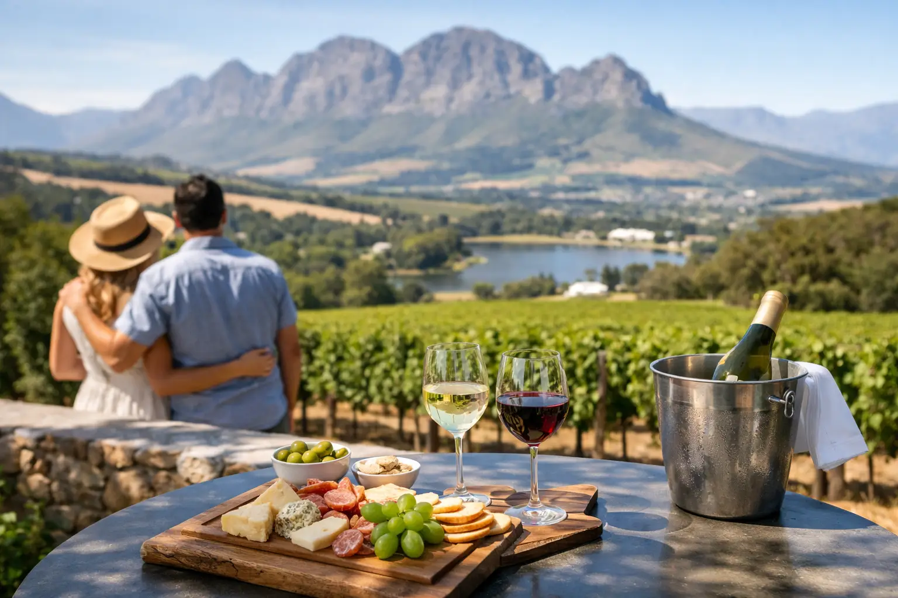

Cape Winelands Wine Tour for a Great Day

The first vine-covered slopes appear less than an hour outside Cape Town, but a good Cape Winelands wine tour feels like a complete change of pace. Mountain passes replace city streets, historic Cape Dutch estates open onto wide lawns, and each valley offers a different take on South African wine. The challenge is not finding a beautiful vineyard. It is fitting the right mix of tastings, food, scenery, and travel time into one relaxed day.
For visitors with limited time, a guided day tour removes the pressure of driving unfamiliar roads, appointing a designated driver, or working out which estates are close enough to visit together. It also leaves room for the best part of the Winelands: sitting back with a glass in hand and enjoying the view.
What a Cape Winelands Wine Tour Can Include
The Cape Winelands is not one single wine route. Stellenbosch, Franschhoek, and Paarl are neighboring regions, each with its own landscape, history, and wine personality. Trying to cover every major estate in all three on one day can turn a wine tour into a race. A well-planned itinerary instead combines two regions, or focuses deeply on one, based on your interests, departure point, and available time.
A full-day experience commonly begins with hotel pickup in Cape Town in the morning. From there, your guide can shape the route around estate opening times, reservations, weather, and the group’s pace. Travel to the first vineyards generally takes 45 to 75 minutes, depending on the valley selected and traffic leaving the city.
Most guests enjoy two or three tasting stops, a scenic drive through the valleys, time for lunch, and a late-afternoon return to their hotel. That is enough to experience the variety of the region without rushing through every pour. A private tour may add a fourth stop if the group prefers shorter tastings or skips a formal lunch. Shared tours usually follow a set route and timing so everyone can enjoy the day comfortably.
Stellenbosch: Classic Estates and Historic Character
Stellenbosch is often the natural first choice for a Cape Winelands wine tour. It is close to Cape Town, surrounded by dramatic mountains, and home to some of South Africa’s best-known wine estates. The town itself has oak-lined streets, Cape Dutch architecture, galleries, and restaurants, making it a strong option for travelers who want more than vineyard views.
Wine styles vary widely, although Stellenbosch is especially respected for Cabernet Sauvignon, Bordeaux-style blends, Chenin Blanc, and Pinotage. At one estate, a tasting may be hosted in a modern cellar room; at the next, it may take place on a shaded terrace overlooking vineyards. Some farms also offer food-and-wine pairings, cheese tastings, or chocolate pairings for guests who want a more structured tasting experience.
Franschhoek: Food, Scenery, and Sparkling Wine
Franschhoek sits in a narrow valley framed by tall mountains, and its French Huguenot heritage is visible in many estate names and local food traditions. The drive into the valley is part of the appeal. This is an excellent choice for couples, food-focused travelers, and anyone looking for a slower, more polished wine-country atmosphere.
Franschhoek is known for elegant restaurants, beautiful garden estates, and Cap Classique, South Africa’s traditional-method sparkling wine. A lunch stop here can be as simple as a vineyard café or as elaborate as a long, reservation-only meal. The trade-off is timing: a destination lunch is memorable, but it can reduce the number of tastings possible that day. For many guests, that is a worthwhile exchange.
Paarl: Big Views and Bold Wines
Paarl is defined by its granite mountain, warm climate, and spacious estates. It tends to suit visitors who enjoy fuller-bodied reds, generous hospitality, and less crowded tasting rooms. The region produces excellent Shiraz, Chenin Blanc, Cabernet Sauvignon, and Rhône-style blends.
Because Paarl lies north of Stellenbosch and Franschhoek, it works particularly well for a route that focuses on Paarl and Stellenbosch together. Guests who want a relaxed countryside day rather than a town-focused itinerary may find its broad valley views especially appealing.
How to Choose the Right Wine Tour Format
The best tour format depends on who you are traveling with and how much control you want over the day. A shared group tour offers excellent value, planned routing, and the chance to meet fellow travelers. It is a practical choice for solo visitors, couples, and small groups happy to follow a scheduled itinerary.
A private Cape Winelands wine tour is better suited to guests celebrating a special occasion, families with different pacing needs, serious wine enthusiasts, or groups who already have specific estates in mind. Private transport allows more flexibility around pickup time, preferred lunch style, dietary needs, and optional stops such as a town walk, a cellar tour, or a scenic lookout.
For larger parties, the planning matters even more. A group of 20 to 200 guests needs estate reservations, suitable vehicle capacity, timing for tastings, and lunch arrangements confirmed well in advance. A professional transport and tour team can coordinate these details so that guests arrive together, enjoy service without long waits, and return safely after a day of tasting.
A Smart Full-Day Itinerary From Cape Town
A typical full-day route can begin with a morning hotel pickup between 8:00 and 9:00 a.m. After leaving Cape Town, the first tasting often takes place in Stellenbosch or Paarl before late morning. Starting early helps avoid a rushed first stop and gives guests time to appreciate the estate rather than simply check it off a list.
The second stop may include a signature tasting or a pairing experience. This is a good point in the day for guests to compare styles, ask questions about South African varieties, and decide whether to purchase a bottle to take home. Your guide can also explain local wine terminology and the differences between the valleys.
Lunch generally falls between 12:30 and 2:00 p.m. A vineyard restaurant offers a classic Winelands setting, but a lighter café lunch can make more room for an additional afternoon tasting. After lunch, the route may continue to Franschhoek for mountain scenery and sparkling wine, or remain closer to Stellenbosch for a final estate visit and a more direct drive back to Cape Town.
Most full-day tours return in the late afternoon or early evening. Exact timing depends on the route, seasonal daylight, traffic, estate bookings, and whether the group chooses optional experiences. The advantage of hotel-to-hotel transport is simple: no one needs to navigate back after tasting, and you can enjoy the day through to the final stop.
Tasting Well Without Overdoing It
A wine tasting is more enjoyable when you treat it as a tasting rather than a contest. Estate pours can add up, particularly when a day includes several stops. Have breakfast before pickup, drink water regularly, and allow enough time for lunch. Guides and drivers can help maintain a comfortable pace, but it is always fine to skip a pour or choose a smaller tasting.
It is also worth being selective. Ask for a tasting that reflects the estate’s strengths rather than trying to sample every wine on the menu. If you enjoy sparkling wine, seek out Cap Classique. If red blends are your focus, Stellenbosch and Paarl offer plenty of options. Travelers who prefer lighter, crisp wines may enjoy Chenin Blanc, Sauvignon Blanc, or rosé tastings, especially in warmer months.
Bring sunscreen, sunglasses, and a light layer even on clear days. The Western Cape weather can change between Cape Town and the valleys, and outdoor terraces may feel cool after a warm afternoon. Comfortable shoes are useful for vineyard walks, although this is not a strenuous day unless you add a hiking or cycling activity.
Details That Make the Day Easier
Before booking, confirm what is included in your chosen tour. Transport, guide services, hotel pickup and drop-off, water, and selected snacks may be included, while tasting fees, meals, premium pairings, and cellar tours can be separate. There is no single rule across all estates, so clear inclusions prevent surprises on the day.
Let your tour operator know about dietary requirements, mobility considerations, children traveling with the group, or a preference for non-alcoholic options. The Winelands can work beautifully for mixed groups because many estates offer excellent food, coffee, grape juice, gardens, and scenery alongside wine. Not everyone has to taste at every stop to enjoy the route.
For visitors who want a professionally managed day with local insight, Flexi Tours can arrange shared or private Winelands transport and itineraries from Cape Town. The right route is not necessarily the one with the most estates. It is the one that gives your group enough time to taste, eat, take in the mountains, and return with a few memorable bottles and no logistics left to solve.
Planning this trip?
Tell us your dates and we will put a day together for you.